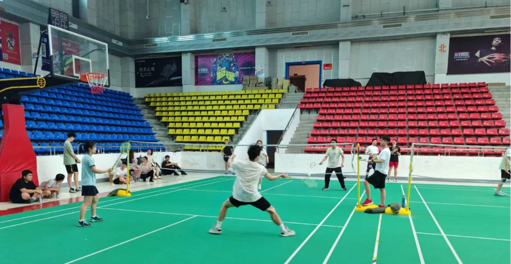
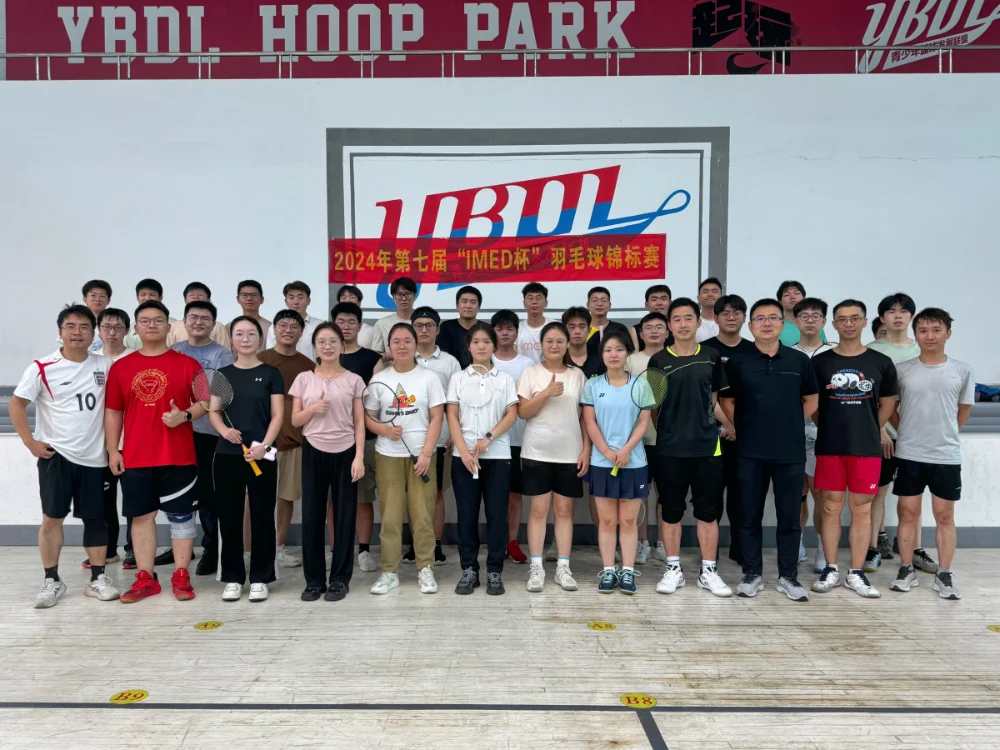

6月21日下午，第七届“IMED杯”羽毛球锦标赛顺利在温医体育馆内举行，以运动的方式欢送毕业生们。
比赛前，在郝晋奎博士的组织下，各参赛成员通过抽签方式确定了分组，确保了比赛的公平性和趣味性。各组选手们纷纷摩拳擦掌，准备在赛场上展现自己的风采。
在马煜辉博士后的指挥下，比赛正式拉开帷幕。场上，羽毛球在空中划出一道道优美的弧线，选手们时而扣杀、时而吊球，展现出高超的球技和默契的配合。场下，小组成员们也为场上选手们的精彩表现加油助威，现场气氛热烈而紧张。
经过多轮激烈比拼，各组选手的排名逐渐明朗。最终，经过紧张刺激的决赛，冠军、亚军和季军分别诞生。IMED团队更是贴心地为每一位参算人员都设置了奖品。

比赛结束后，大家参加了一场丰盛的聚餐活动。大家围坐在一起，共同分享比赛的喜悦和毕业的感慨。餐桌上，毕业生们回顾了自己在研究生阶段的点点滴滴，对未来充满了期待和憧憬。老师们和同学们也纷纷表达了对毕业生们的祝福和不舍。
此次羽毛球比赛和聚餐活动不仅为课题组的同学们提供了一个放松身心的机会，更是一次难得的团聚和交流的机会。通过比赛和聚餐，大家更加深刻地感受到了IMED大家庭的温暖和团结。同时，也为毕业生们送上了一份特别的毕业礼物，祝愿他们在未来的道路上一切顺利，前程似锦！

编辑：李园园
时间：2024/07/01